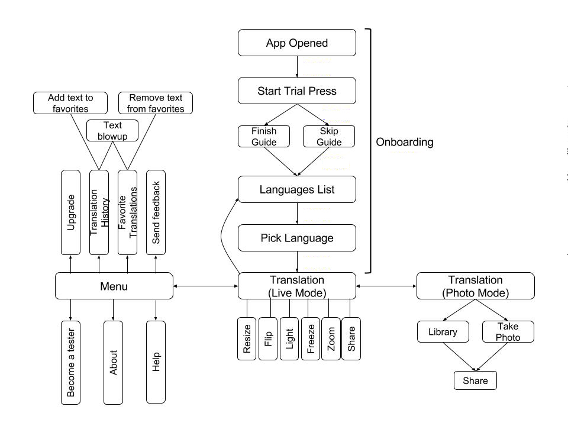

I approached this problem by first creating a basic user flow of the app.
Then, with mobile analytic programs, I identified the parts of the app where the user drop off was the highest. Once I found that the onboarding process had the highest drop off rate, I concluded that some of the possibilities for this occurrence were:
I decided that changing the onboarding guide would be a good first step because a new guide could clear up confusion about the free trial and languages offered. I studied the onboarding guides of various apps such as Google Translate and Slack to see how their users were introduced to their apps. After studying these apps, I worked with the Waygo team to come up with a different onboarding guide.
I conducted user tests through arranged meetings and at cafes. At these meetings, I observed users as they went through the onboarding process and made a few translations using the app. I asked them questions about certain aspects of the app and used a screen/voice recording software so that I could review their feedback.
By the end of my internship with Waygo, I had gone through one round of testing the new onboarding guide and was able to pass on my notes to the Waygo team.